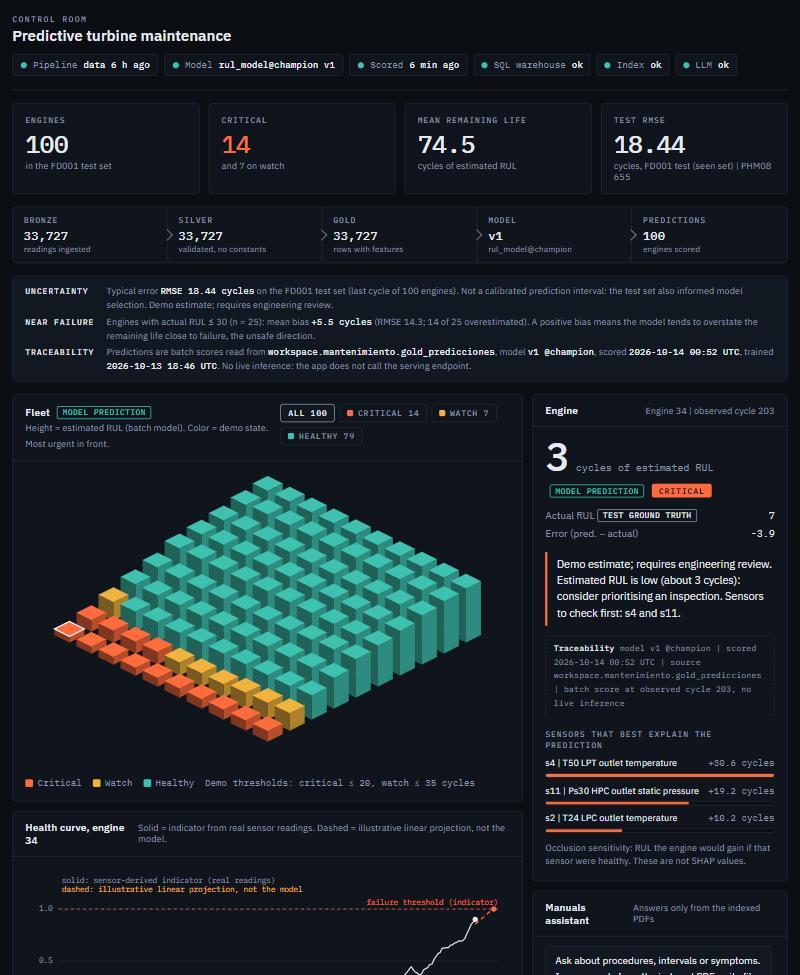
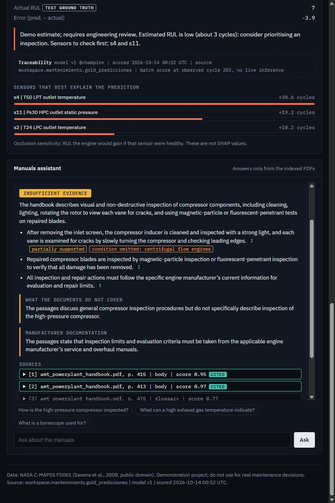

An end-to-end, audited demo: a medallion pipeline, a remaining-useful-life model with MLflow serving, a 100-engine control-room dashboard and a manuals assistant that cites its sources.
IllustrationFixed-interval maintenance replaces healthy parts and still misses the engine that is about to fail. The question a maintainer actually asks is simpler: how many cycles are left on this unit, and how sure are we?
IllustrationTHE DATA
NASA C-MAPSS FD001: 100 engines run to failure for training, 100 truncated engines for testing, 21 sensors per cycle. A public simulation dataset, not fleet telemetry.
THE TARGET
Remaining useful life (RUL) in cycles at the last observed cycle of each test engine, plus a grounded answer when the maintainer asks the manual what to inspect.
Everything runs as a Databricks Asset Bundle on serverless compute. The app reads batch scores; the serving endpoint is an independent inference interface that the audit invoked directly.
WHAT THE AUDIT CHECKED
PANDAS VS SPARK
RMSE IN CYCLES, FD001 TEST, LAST CYCLE OF 100 ENGINES
ERROR BY ACTUAL RUL BAND (BIAS = PREDICTED MINUS ACTUAL)
CHAMPION v1
HONEST READING
The test set also informed the champion rule, so 18.44 describes a frozen model on a seen set, not an independent error estimate. A by-engine protocol on train only gives 18.0 with a 1.2 spread over 200 random cuts, and the new promotion gate uses that validation (HGB 19.2 vs Ridge 22.1), never the test set.
NEAR FAILURE
With an actual RUL of 30 or less (25 engines) the model overestimates the remaining life by 5.5 cycles on average, and 6 of 26 low-RUL engines are shown as healthy. That is the unsafe direction, and the reason the dashboard labels every number a demo estimate that requires engineering review.
Unity Catalog model, alias champion, served on a scale-to-zero CPU endpoint. The same input row was followed through every link.
model workspace.maintenance.rul_model version 1 status READY alias champion -> v1 params n_features 85 n_train_rows 20631 rul_clip 125 metrics rmse_test 18.4418 mae_test 13.4780 phm08_test 655.02 rmse_best_baseline 21.7963 signature 85 double inputs -> float64 (-1) env python 3.12.3, sklearn 1.7.2 mlflow 3.12.0
endpoint dev_<user>_rul-model-dev entity rul_model v1 compute CPU Small, scale to zero state READY batch check, 100 engines round(endpoint, 2) == table max |diff| 0.00 mismatches 0 / 100 RMSE vs actual 18.4418 (= MLflow) negative inputs missing column rejected string in s7 rejected nulls accepted (D-02)
AVAILABILITY, FREE EDITION
The endpoint vanished from the workspace between the two audit days and was recreated with one bundle deploy; the app auto-stops when idle and restarts on demand. Reproducible, not continuously available.
WHAT THE APP READS
The dashboard never calls the endpoint: it reads the batch table written by 03_score with the same model and shows model version and scoring time. The endpoint is the independent path the audit used to cross-check every value.
Height is the estimated remaining life, colour is the demo state, the most urgent units sit in front. Every value is a batch score read from the gold table, with its model version and scoring time.

1 2 3 4Passages and questions are treated as data: instruction-like text is stripped, numeric manufacturer values are withheld, dropped conditions are flagged.

Asked how the high-pressure compressor is inspected, the assistant answers insufficient evidence: the handbook only describes general compressor inspection. Each statement carries its page, one is flagged because the source limits it to centrifugal-flow engines, and manufacturer limits are explicitly deferred.
HELD-OUT SET: 85 NEW QUESTIONS, 3 LANGUAGES
MANDATORY TEST: HIGH-PRESSURE COMPRESSOR INSPECTION
The handbook has no HPC-specific procedure, only generic compressor-section inspection (pp. 413 to 415). In 9 of 9 reviewed answers the assistant did not turn that generic text into an HPC procedure; it abstained or declared the gap. Re-asked on the live app on 2026-10-15: not_found (Spanish and English wording) and insufficient_evidence with the omitted condition flagged (UI preset). Answers vary between runs: a known, documented limitation.
VERIFIED
LIMITATIONS
A simulation dataset and a demo model. This is a portfolio-grade, audited prototype, not a certified aeronautical maintenance system.
Jonathan Rincon (industrial engineer) defined the architecture, the technical parameters and the implementation sequence, and reviewed every phase of the work.
STACK
REPOSITORY
github.com/jonathanjrm/
databricks-mantenimiento-predictivo
Audit reports, evidence files, evaluation sets, tests and this carousel's source are part of the project tree and are published with the reviewed branch.